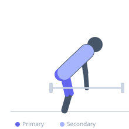
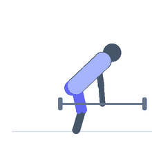

Exercise guide / Trap Bar Deadlift
Trap Bar Deadlift
The trap bar deadlift is performed inside a hexagonal barbell, gripping handles at the sides with a neutral grip. Standing inside the bar shifts the center of mass closer to the body compared to a conventional deadlift, reducing the moment arm at the hip and lumbar spine while increasing the moment arm at the knee. The result is a more quad-dominant pattern than a conventional deadlift, with less spinal stress — making it an effective compound exercise for general strength and power development.
Primary muscles
rectus femoris
vastus lateralis
vastus medialis
gluteus maximus
biceps femoris long head
Secondary muscles
iliocostalis
trapezius upper
latissimus dorsi
Stabilizers
transverse abdominis
flexor carpi radialis
Equipment
Trap Bar (Hex Bar)
Weight Plates
Optional
Lifting Straps


Starting position
- Stand inside the trap bar with feet hip-width apart and the handles beside your hips. Push the hips back and bend the knees to grip the handles.
Setup
- Load the bar with appropriate weight. The high handles on most trap bars reduce the range of motion — use the low handles for a full range similar to a conventional deadlift. Neutral grip is automatic with the trap bar.
Steps
- Step 1: Stand inside the bar, feet hip-width. Push the hips back and bend the knees until the hands reach the handles. Take a neutral grip.
- Step 2: Brace the core, take a deep breath, and pull the bar tight against the floor before beginning the lift.
- Step 3: Push the floor away — the leg drive is prominent with the trap bar. Drive through the full foot.
- Step 4: Extend the hips and knees simultaneously to reach a fully upright position with hips locked out.
- Step 5: Return the bar to the floor under control, maintaining spinal position throughout.
Coaching cues
- Push the floor away, not pull the bar up
- Hips and shoulders rise together
- Squeeze the glutes at the top to lock out
Breathing
- Inhale and brace before the pull. Hold through the lift. Exhale at the top.
Range of motion
- Full extension at the top. Full setup position at the bottom with spine neutral and hips loaded.
Tempo
- 1-0-2-0 (pull 1s, controlled lower 2s)
Common mistakes
- Letting the hips rise faster than the shoulders — turning it into a stiff-leg pull from the lower back
- Rounding the lower back due to setting up with hips too high or too low
- Not using the full foot — think of leg-pressing the floor rather than just pulling with the back
Safety
- Easier to learn than conventional deadlift — good entry point for beginners
- Still requires proper bracing — do not lift with a relaxed core
Training
- strength: 1–5 reps
- hypertrophy: 5–10 reps
- endurance: 10–15 reps
- strength: 3–6 sets
- hypertrophy: 3–5 sets
- endurance: 2–4 sets
- Rest: {'strength': 240, 'hypertrophy': 120, 'endurance': 60}